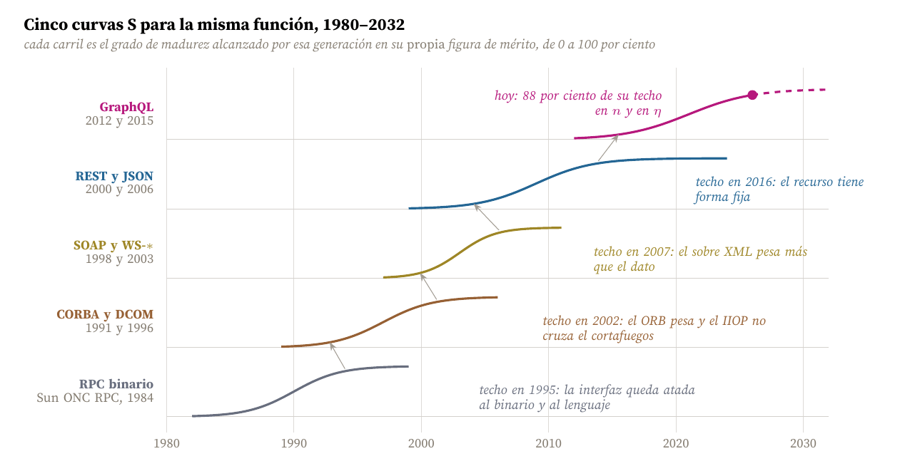
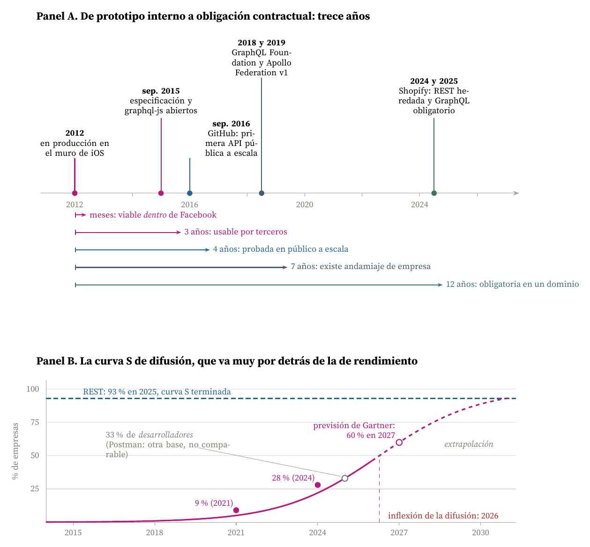
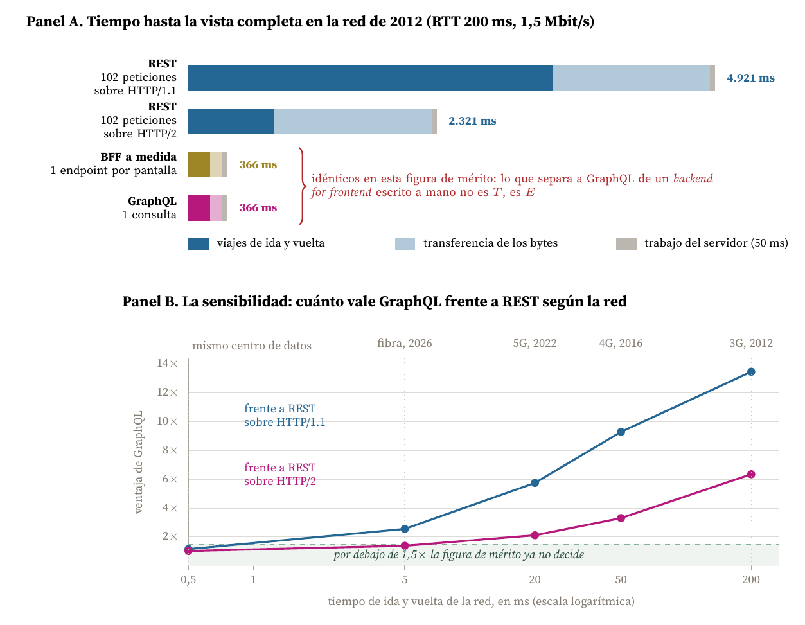
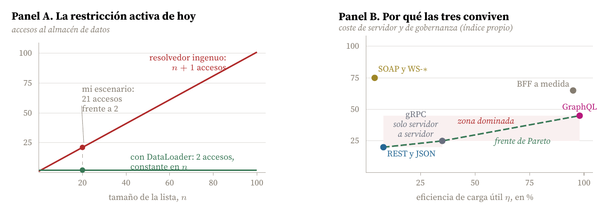

Análisis de la sensibilidad tecnológica de GraphQL como alternativa a REST, leído sobre la genealogía RPC, CORBA, SOAP y REST
Carlos Luis Rojas Aragonés
Elijo GraphQL, el lenguaje de consulta para interfaces de programación que Facebook construyó en 2012 y liberó en 2015, y lo analizo como posible alternativa a REST. Lo elijo por tres razones.
La primera es que está exactamente en la fase que piden los ejemplos del módulo: una tecnología que ya cruzó el punto de inflexión de su curva S, que lleva cuatro o cinco años en la parte alta de esa curva y cuya figura de mérito original está prácticamente agotada, mientras su curva de difusión sigue subiendo. Esa combinación, rendimiento saturado y adopción creciente, es justamente donde el análisis de sensibilidad tiene algo que decir.
La segunda es que GraphQL tiene una genealogía documentada de cuarenta años. No apareció de la nada: es el quinto intento de resolver la misma función, y los cuatro anteriores fracasaron cada uno contra una restricción activa distinta. Poder ver cinco curvas S de la misma función, con cuatro asíntotas ya conocidas, es un lujo que pocas tecnologías ofrecen.
La tercera es personal: decido sobre esto en mi trabajo, y quería comprobar si la decisión que tomo por intuición aguanta cuando se le declara una figura de mérito y se le hace la aritmética.
GraphQL llevó su figura de mérito original hasta el límite teórico en menos de tres años, y desde entonces el problema que la justificaba se ha ido disolviendo por otro lado: la red se hizo rápida. La ventaja de GraphQL sobre REST, medida en tiempo hasta la vista completa, pasa de un factor 13 en la red móvil de 2012 a un factor 1,03 entre dos servicios del mismo centro de datos. Lo que sostiene hoy a GraphQL ya no es el tiempo de respuesta sino el coste de desarrollo por vista nueva y la gobernanza del esquema. Y sus restricciones activas se mudaron de sitio: ya no están en la red, están en el servidor.
Antes de comparar hace falta declarar qué función presta la tecnología y con qué se mide, que es la disciplina que propone de Weck (2022): la figura de mérito es la medida cuantitativa del desempeño en la función prestada, independiente de la implementación que la entregue.
La función es esta: componer, en un cliente, el conjunto exacto de datos que necesita una vista, cuando esos datos viven en una o varias máquinas remotas.
Sobre esa función declaro cuatro figuras de mérito. La primera es la que gobierna la experiencia y es la que uso como principal:
T = n · RTT + B / v + Ts
donde T es el tiempo hasta la vista completa, n el número de viajes de ida y vuelta encadenados, RTT el tiempo de ida y vuelta de la red, B los bytes transferidos, v el ancho de banda y Ts el tiempo de trabajo del servidor. Las otras tres son las componentes que un diseño puede mover:
Esta separación es la que ordena todo lo que sigue, porque cada una de las cinco generaciones de esta historia optimizó una figura de mérito distinta y ninguna de ellas optimizó la de la generación anterior.
| Generación | Origen | Figura de mérito dominante | Restricción que la detuvo | Qué la relevó |
|---|---|---|---|---|
| RPC binario | 1984 | Transparencia: que la llamada remota se escriba como una local | Heterogeneidad de máquinas y lenguajes; acoplamiento de la interfaz al binario | Objetos distribuidos |
| CORBA y DCOM | 1991, 1996 | Interoperabilidad entre lenguajes y proveedores | Peso del intermediario de objetos y objetos remotos de grano fino, muy charlatanes; no atraviesan cortafuegos | Servicios sobre HTTP |
| SOAP y WS-* | 1998, 2003 | Interoperabilidad entre organizaciones sobre el puerto 80 | Verbosidad del sobre XML y peso del contrato WSDL y de la pila WS-* | Recursos y JSON |
| REST y JSON | 2000, 2006 | Coste de integración: tiempo hasta la primera llamada correcta | El recurso tiene forma fija: sobre-entrega y sub-entrega de datos | Consulta compuesta por el cliente |
| GraphQL | 2012, 2015 | η y n: bytes útiles y un solo viaje por vista | Activa hoy: coste de resolución campo a campo en el servidor | Todavía nada |
La idea fundacional está en Birrell y Nelson (1984): hacer que invocar un procedimiento en otra máquina se parezca lo más posible a invocarlo en la propia. La figura de mérito era la transparencia para el programador, y en eso funcionó. Sun ONC RPC la llevó a producción a finales de los ochenta.
La restricción que la detuvo fue la heterogeneidad. El talón y el esqueleto se generaban a partir de una descripción de interfaz, el cliente y el servidor quedaban atados al mismo esquema de serialización, y cualquier cambio en la interfaz rompía a todos los clientes a la vez. Nadie podía publicar una interfaz para un tercero desconocido.
CORBA aparece en 1991 desde el Object Management Group y DCOM en 1996 desde Microsoft (Wikipedia, 2026a). La figura de mérito se desplaza a la interoperabilidad entre lenguajes y proveedores, y técnicamente lo consiguen.
Se detuvieron contra dos cosas. La primera es el peso del intermediario de objetos: montar un ORB era un proyecto en sí mismo. La segunda, y más letal, es la que en el módulo llamaríamos una restricción del entorno: los objetos remotos de grano fino invitan a hacer muchas llamadas pequeñas, y como T crece linealmente con n, una interfaz charlatana se vuelve inutilizable en cuanto el RTT deja de ser el de una red local. Y encima IIOP no pasaba por los cortafuegos corporativos.
XML-RPC en 1998 y luego SOAP resolvieron el problema del cortafuegos por la vía más pragmática que existía: envolverlo todo en XML y mandarlo por HTTP, que es el único puerto que ninguna organización cierra (Wikipedia, 2026b). SOAP 1.2 llega a recomendación del W3C en junio de 2003 (World Wide Web Consortium, 2003), con WSDL para el contrato y una pila de especificaciones WS-* alrededor.
La figura de mérito pasó a ser la interoperabilidad entre organizaciones, y esa sí la resolvió: la banca y los sistemas de reservas siguen funcionando con SOAP hoy. Pero la restricción activa se volvió el propio sobre. Un mensaje SOAP con sus cabeceras, sus espacios de nombres y su tipado explícito multiplica por varias veces la carga útil, y el contrato WSDL hace que publicar un cambio sea un acto de coordinación entre equipos. En mi tabla de figuras de mérito, SOAP tiene la η más baja de las cinco generaciones.
Fielding (2000) describe REST en su tesis del año 2000, no como un producto sino como el estilo arquitectónico que el propio HTTP ya encarnaba. Con JSON como formato, REST optimizó una figura de mérito que las tres generaciones anteriores habían ignorado: el tiempo que tarda un desarrollador ajeno en hacer su primera llamada correcta. Sin ORB, sin generación de código, sin contrato previo, con una URL y un navegador.
Ese fue el salto real y por eso REST ganó. Sigue ganando: en 2025 el 93 por ciento de los desarrolladores encuestados por Postman declaran usar REST (Postman, 2025).
Y su restricción activa es la que dio origen a GraphQL: el recurso tiene forma fija. El servidor decide qué campos lleva un usuario, y los lleva siempre, los use la vista o no. De ahí los dos síntomas clásicos:

Figura 1. La función no cambió en cuarenta años; la figura de mérito, sí. Cada carril dibuja una logística ajustada a mano sobre las fechas documentadas de aparición, inflexión y saturación de esa generación, normalizada al techo de su propia figura de mérito: la transparencia para RPC (Birrell y Nelson, 1984), la interoperabilidad entre lenguajes para CORBA y DCOM (Wikipedia, 2026a), la interoperabilidad entre organizaciones para SOAP (World Wide Web Consortium, 2003), el coste de integración para REST (Fielding, 2000) y la eficiencia de entrega para GraphQL (Byron, 2015). Las curvas son elaboración propia y sirven para leer la forma y el relevo, no para leer un valor de un año concreto. Las flechas grises marcan el relevo: cada generación arranca cuando la anterior toca su asíntota.
En 2011 y 2012 Facebook estaba reescribiendo sus aplicaciones móviles nativas después de que su apuesta por la web móvil resultara, en palabras de su propio fundador, el mayor error estratégico de la compañía. Nick Schrock, Lee Byron, Dan Schafer y Jonathan Dan construyeron un prototipo llamado SuperGraph que en el verano de 2012 ya servía el muro de noticias de la aplicación de iOS (Postman, 2024).
La idea es una sola y es la que rompe la restricción de REST: que sea el cliente quien declare la forma exacta del resultado, sobre un esquema tipado que el servidor publica. Un solo punto de entrada, una sola petición, una respuesta que tiene la misma forma que la consulta.
El Cuadro 2 pone números a lo que eso significa en la pantalla que motivó el invento.
| Entidad | Unidades | Objeto completo | Campos de la vista | Total REST / GraphQL |
|---|---|---|---|---|
| Perfil del usuario | 1 | 1,8 kB | 0,08 kB | 1,8 / 0,1 kB |
| Publicaciones | 20 | 3,2 kB | 0,40 kB | 64,0 / 8,0 kB |
| Autor de cada publicación | 20 | 1,8 kB | 0,08 kB | 36,0 / 1,6 kB |
| Comentarios | 60 | 1,1 kB | 0,12 kB | 66,0 / 7,2 kB |
| Autor de cada comentario | 60 | 1,8 kB | 0,08 kB | 108,0 / 4,8 kB |
| Bytes transferidos B | 275,8 / 21,7 kB | |||
| Eficiencia de carga útil η | 8 % / 100 % | |||
| Peticiones HTTP | 102 / 1 | |||
| Viajes encadenados n | 17 (HTTP/1.1) o 4 (HTTP/2) / 1 | |||
Tres cosas de ese cuadro merecen comentario.
La primera: mi η para REST sale del 8 por ciento, mientras Brito et al. (2019) midieron un 1 por ciento en bytes sobre sistemas reales. Mi escenario es deliberadamente conservador y aun así la diferencia es de un factor 13.
La segunda: las 102 peticiones no se convierten en 102 viajes. Sobre HTTP/1.1, con seis conexiones simultáneas por servidor, son 17 rondas. Sobre HTTP/2, que llegó en mayo de 2015 y multiplexa sobre una sola conexión (Belshe, Peon y Thomson, 2015), lo que queda son los cuatro niveles de dependencia del grafo de datos. HTTP/2 le quitó a GraphQL tres cuartas partes de su ventaja el mismo año en que GraphQL se publicó. Es el dato más incómodo de todo este trabajo y volveré sobre él.
La tercera: n = 1 es el mínimo teórico. GraphQL no puede mejorar más por ese eje. Eso es lo que significa estar cerca de la asíntota.
La pregunta no tiene una respuesta sino cinco, porque «viable» significa cosas distintas según quién pregunte. La Figura 2 las separa.

Figura 2. Panel A: hitos documentados y los cinco umbrales de viabilidad. Fechas de Postman (2024), Byron (2015), GitHub (2016), Lardinois (2018), Apollo GraphQL (2024), GraphQL Foundation (2025) y Shopify (2026b). Panel B: curva de difusión empresarial. Los puntos llenos son las dos referencias de Gartner recogidas por IBM (2023) y WunderGraph (2026), menos del 10 por ciento en 2021 y menos del 30 por ciento en 2024; el punto blanco de 2027 es la previsión de Gartner de más del 60 por ciento; el punto gris es Postman, que mide desarrolladores y no empresas y por eso no es comparable (Postman, 2025). La logística está ajustada a los dos puntos de Gartner y su asíntota se ha fijado en 100 por falta de un dato que la acote, que es el supuesto más débil de la figura.
Y si se cuenta la genealogía completa, la respuesta es otra: veintiocho años desde Birrell y Nelson (1984) hasta la concepción de GraphQL en 2012, con una generación nueva cada siete u ocho años.
Lo que me parece más útil de esta lista es el desfase entre el punto 2 y el punto 5: nueve años entre que la tecnología está terminada y que alguien la impone. La curva S de rendimiento y la curva S de difusión no van juntas, y confundirlas es el error clásico de una hoja de ruta.
Aquí está el núcleo del trabajo. Aplico la ecuación del apartado 2 al escenario del Cuadro 2 en cinco entornos de red, desde el 3G de 2012 hasta dos servicios en el mismo centro de datos, y comparo cuatro arquitecturas. Fijo Ts = 50 ms para todas, de modo que la comparación aísle lo que la arquitectura de la interfaz sí controla.

Figura 3. La ventaja de GraphQL no es una propiedad de GraphQL: es una función del RTT. Panel A: descomposición de la ecuación del apartado 2 para el escenario del Cuadro 2 en la red móvil de 2012. Panel B: la misma comparación repetida en cinco entornos de red, cada uno con su RTT y el ancho de banda típico de esa tecnología (1,5, 20, 100, 300 y 10.000 Mbit/s). Elaboración propia con B = 275,8 kB para REST, B = 21,7 kB para GraphQL y Ts = 50 ms para ambos. Los cinco puntos son escenarios discretos, no una función continua del RTT: la recta que los une solo ayuda a leer la tendencia.
Los resultados están en la Figura 3 y son estos:
Los dos últimos puntos, juntos, cambian el argumento de venta de GraphQL.
Si la única figura de mérito fuera T, la conclusión sería que GraphQL solo se justifica cuando el consumidor está lejos: aplicaciones móviles, mercados con red pobre, clientes en otro continente. Y que entre servicios de un mismo centro de datos no aporta nada, que es exactamente lo que ocurre en la práctica y por qué ahí ganan REST y gRPC, que Google publicó en febrero de 2015 sobre HTTP/2 (Google, 2015).
Pero hay una segunda figura de mérito, E, el esfuerzo por consulta nueva, y ahí sí se separan GraphQL y el endpoint a medida. Brito y Valente (2020) hicieron un experimento controlado con 22 estudiantes que implementaron ocho consultas en las dos tecnologías: la mediana fue de 9 minutos con REST y 6 con GraphQL, un 33 por ciento menos, y la ventaja crecía con la complejidad de la consulta. El endpoint a medida, además, exige un despliegue del servidor por cada pantalla nueva; GraphQL, ninguno.
Es la misma lección de la aviación: cuando una figura de mérito se satura, el valor de la tecnología no desaparece, se muda a otra figura de mérito. La de GraphQL se mudó del tiempo de respuesta al coste marginal de la vista número cincuenta.
La pregunta pide las restricciones activas que limitan el rendimiento del sistema. En el lenguaje del módulo, una restricción es activa cuando está ligada en el óptimo: relajarla mejora la figura de mérito, y relajar cualquier otra no hace nada. Con esa definición, y a la vista de la Figura 3, la lista de GraphQL ha cambiado de orden en los últimos diez años.
| Restricción activa | De dónde sale | Qué límite impone | Mitigación y su coste |
|---|---|---|---|
| 1. Resolución campo a campo | La especificación resuelve cada campo por separado; una lista de n elementos con un campo que consulta el almacén genera n+1 accesos | Gobierna Ts, que en redes rápidas es ya el 98 % de T | DataLoader agrupa por ciclo del bucle de eventos, o se compila el árbol a SQL. Coste: es responsabilidad del programador, no de la plataforma |
| 2. Espacio de consulta no acotado | El cliente compone; el coste no se puede leer de la URL | La misma ruta puede costar 1 unidad o un millón. Escape halló problemas de consumo de recursos no restringido en el 69 % de 160 endpoints públicos | Coste calculado por consulta: Shopify da 1.000 puntos por ventana y repone entre 50 y 500 por segundo. Coste: la capacidad pasa a ser un problema de esquema |
| 3. Sin caché HTTP intermedia | POST a un único punto de entrada: ni CDN, ni proxy, ni caché del navegador | Pierde el acierto de borde, que en REST es gratis y llega al 70 u 80 % | Consultas persistidas con GET y hash. Coste: vuelve a atar el cliente al despliegue del servidor |
| 4. Errores fuera de HTTP | Se responde 200 con un array errors | Cortafuegos, balanceadores y observabilidad por código de estado dejan de ver los fallos | Tipos de resultado en el esquema. Coste: disciplina, no tecnología |
| 5. Gobernanza del esquema | Un grafo único compartido por muchos equipos | Fija el tamaño mínimo de organización a partir del cual compensa | Federación, registro de esquemas y comprobación de composición. Coste: una plataforma y un equipo que la sostenga |
Esta es, para mí, la conclusión más importante del trabajo. En 2012 el término que gobernaba la ecuación era n · RTT: 3.400 de los 4.921 ms, el 69 por ciento. GraphQL atacó ese término y lo llevó a su mínimo teórico, n = 1.
Hoy, entre dos servicios del mismo centro de datos, ese mismo término vale 0,5 ms de un total de 50,5. El 99 por ciento del tiempo es Ts. GraphQL agotó el eje que optimizaba, y la restricción activa pasó a ser precisamente su propio modelo de ejecución.
Y ese modelo de ejecución tiene un problema estructural, no incidental: la especificación resuelve cada campo de forma independiente, de modo que el resolvedor de un campo dentro de una lista de n elementos se ejecuta n veces. El Panel A de la Figura 4 lo dibuja. La solución canónica, DataLoader, agrupa las claves pedidas dentro de un mismo ciclo del bucle de eventos y las resuelve en un solo acceso (GraphQL Foundation, 2026). Es eficaz, pero conviene ver lo que significa: el rendimiento de una API GraphQL no depende de la tecnología sino de si el equipo puso el DataLoader. En REST ese error no se puede cometer, porque el endpoint se escribe entero a mano.

Figura 4. Panel A: el problema N+1 de resolvedores, que es la restricción activa dominante de GraphQL una vez que la red deja de serlo. La curva ingenua es el comportamiento que describe la propia documentación de referencia; la constante es lo que consigue DataLoader agrupando por ciclo del bucle de eventos (GraphQL Foundation, 2026). Panel B: las cinco arquitecturas situadas frente a las dos figuras de mérito que de verdad compiten. Las posiciones en el eje vertical son un índice ordinal de elaboración propia, no una medida: lo que esta figura afirma es la forma del frente, no las coordenadas. SOAP y el backend for frontend escrito a mano están dominados; REST, gRPC y GraphQL están los tres sobre el frente, cada uno en un tramo distinto, y por eso conviven.
La consulta persistida resuelve a la vez la 2 y la 3, y ayuda con la 1: el cliente envía un hash en lugar de la consulta, el servidor la busca en un registro, y como es un GET conocido y de coste acotado vuelven a funcionar la caché de borde y la limitación de tasa.
Es la mejor mitigación que existe y por eso hay que ver lo que cuesta. Con consultas persistidas, el cliente ya no puede pedir cualquier cosa: solo puede pedir lo que está registrado, y registrar es un despliegue coordinado. Es decir, la mitigación devuelve buena parte del acoplamiento entre cliente y servidor que GraphQL vino a eliminar. No es una contradicción, es un frente de Pareto: se compra rendimiento y seguridad con flexibilidad, y cada organización elige su punto.
El Panel B de la Figura 4 sitúa las cinco arquitecturas sobre ese frente. El resultado es el que explica el estado del mercado mejor que cualquier argumento: REST, gRPC y GraphQL están los tres sobre el frente de Pareto. Ninguno domina a los otros. SOAP y el endpoint a medida sí están dominados. Por eso REST sigue en el 93 por ciento y GraphQL en el 33 (Postman, 2025), y por eso la pregunta «¿GraphQL sustituirá a REST?» está mal planteada: no se sustituye a un punto del frente, se elige otro punto.
Poniendo las tres curvas juntas, la lectura es esta:
Traducido a una decisión, que es para lo que sirve esto: yo no justificaría hoy una migración a GraphQL con el argumento del tiempo de respuesta, salvo que el consumidor esté medido y esté lejos. La Figura 3 dice que ese argumento vale un factor 1,4 sobre fibra. Los argumentos que sí aguantan la aritmética son el 33 por ciento de esfuerzo por consulta de Brito y Valente (2020), la eliminación del despliegue por pantalla nueva y la gobernanza de un esquema único cuando hay muchos equipos y muchos clientes, que es el caso de Netflix y de Shopify. Y ninguno de los tres es un argumento de rendimiento.
Apollo GraphQL. (2024). Five years of Apollo Federation: The standard for enterprise API platforms. https://www.apollographql.com/blog/celebrating-five-years-of-apollo-federation
Belshe, M., Peon, R., & Thomson, M. (2015). Hypertext Transfer Protocol version 2 (HTTP/2) (RFC 7540). Internet Engineering Task Force. https://www.rfc-editor.org/rfc/rfc7540
Birrell, A. D., & Nelson, B. J. (1984). Implementing remote procedure calls. ACM Transactions on Computer Systems, 2(1), 39–59. https://doi.org/10.1145/2080.357392
Brito, G., Mombach, T., & Valente, M. T. (2019). Migrating to GraphQL: A practical assessment. IEEE 26th International Conference on Software Analysis, Evolution and Reengineering (SANER), 140–150. https://doi.org/10.1109/SANER.2019.8667986
Brito, G., & Valente, M. T. (2020). REST vs GraphQL: A controlled experiment. IEEE International Conference on Software Architecture (ICSA), 81–91. https://doi.org/10.1109/ICSA47634.2020.00016
Byron, L. (2015, septiembre). GraphQL: A data query language. Meta Engineering. https://graphql.org/blog/2015-09-14-graphql/
de Weck, O. L. (2022). Technology roadmapping and development: A quantitative approach to the management of technology. Springer. https://doi.org/10.1007/978-3-030-88346-1
Escape. (2024). The state of GraphQL security 2024. https://escape.tech/blog/the-state-of-graphql-security-2024/
Fielding, R. T. (2000). Architectural styles and the design of network-based software architectures [Tesis doctoral, University of California, Irvine]. https://ics.uci.edu/~fielding/pubs/dissertation/fielding_dissertation.pdf
GitHub. (2016, septiembre). The GitHub GraphQL API. The GitHub Blog. https://github.blog/developer-skills/github/the-github-graphql-api/
Google. (2015, febrero). Introducing gRPC, a new open source HTTP/2 RPC framework. Google Developers Blog. https://developers.googleblog.com/introducing-grpc-a-new-open-source-http2-rpc-framework/
GraphQL Foundation. (2025, septiembre). GraphQL specification, September 2025 edition. https://spec.graphql.org/September2025/
GraphQL Foundation. (2026). DataLoader: Batching and caching for GraphQL resolvers. https://github.com/graphql/dataloader
IBM. (2023). Seven key insights on GraphQL trends. https://www.ibm.com/think/insights/seven-key-insights-on-graphql-trends
InfoQ. (2020, diciembre). Netflix adopts GraphQL federation for its API platform. https://www.infoq.com/news/2020/12/netflix-graphql-federation
InfoQ. (2022, octubre). Scaling GraphQL adoption at Netflix. https://www.infoq.com/news/2022/10/scaling-graphql-netflix/
Lardinois, F. (2018, noviembre). Facebook's GraphQL gets its own open-source foundation. TechCrunch. https://techcrunch.com/2018/11/06/facebooks-graphql-gets-its-own-open-source-foundation/
Postman. (2024). What is GraphQL? Part 1: The Facebook years. Postman Blog. https://blog.postman.com/what-is-graphql-part-one-the-facebook-years/
Postman. (2025). 2025 state of the API report. https://www.postman.com/state-of-api/2025/
Seabra, M., Nazário, M. F., & Pinto, G. (2019). REST or GraphQL? A performance comparative study. XIII Brazilian Symposium on Software Components, Architectures and Reuse (SBCARS), 123–132. https://doi.org/10.1145/3357141.3357149
Shopify. (2025). All in on GraphQL. Shopify Partners Blog. https://www.shopify.com/partners/blog/all-in-on-graphql
Shopify. (2026a). API rate limits: Calculated query cost. https://shopify.dev/docs/api/usage/limits
Shopify. (2026b). REST Admin API reference. https://shopify.dev/docs/api/admin-rest
Wikipedia. (2026a). Common Object Request Broker Architecture. https://en.wikipedia.org/wiki/Common_Object_Request_Broker_Architecture
Wikipedia. (2026b). XML-RPC. https://en.wikipedia.org/wiki/XML-RPC
World Wide Web Consortium. (2003, junio). SOAP version 1.2 part 1: Messaging framework. https://www.w3.org/TR/soap12-part1/
WunderGraph. (2026). GraphQL vs REST: 18 claims fact-checked with primary sources. https://wundergraph.com/blog/fact-checking-graphql-vs-rest